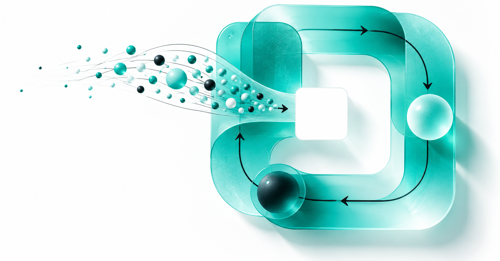

Governance is how autonomy earns trust
Field note in development
Build with Leaser AI / Insights
Architecture, research, and field notes for people building the intelligence layer of multifamily.
Read our first field noteCurrent thinking

001Why the atomic unit of an intelligent system should be a decision whose business outcome can be measured.
Read field note ↗Forthcoming
Field note in development
Field note in development
Field note in development
The ecosystem
We’re connecting property systems, demand channels, data, models, and governed actions around one measurable goal: better occupancy outcomes.
Build with Leaser